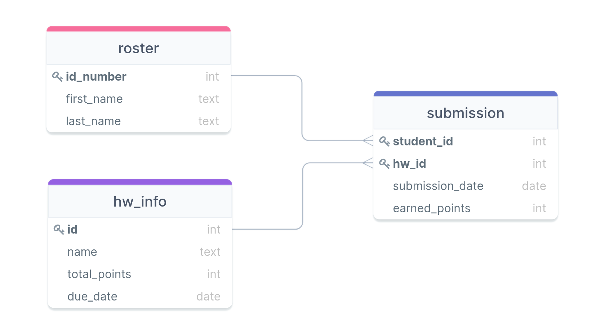

Shell and Joins
Jed Rembold
Wednesday, September 21, 2022
Announcements
- Your third homework is due tomorrow night!
- I’m still working on feedback
- Polling: rembold-class.ddns.net
- For next week, read:
- DeBarros: Ch 7
Why a Terminal?
- A fair question, in an age of modern GUIs, might be “Why should I
learn to work in a terminal?”
- Can allow you to perform highly flexible operations that may not be built into a GUI
- Present on any computer you might come across
- Connecting to remote systems or servers is increasingly necessary to access data, and a terminal gives you the most flexible method of doing so
- Most programming languages or IDEs have an option to drop you to a terminal, so knowing enough to take full advantage is useful
What even is a terminal?
- A terminal historically was a piece of hardware to interact with a computer: entering in information through a keyboard and outputting information through a monitor
- Computers have advanced much since then, so these days a
terminal emulator is generally used to mimic the functionality
of the older hardware terminals
- Most systems have a terminal emulator of some sort built into the
operating system
terminalon MacOScmdon Windowsurxvt,xterm, etc. on Linux
- Most systems have a terminal emulator of some sort built into the
operating system
- The terminal itself though is just the input-output structure. What
appears in the terminal and how you interact with the terminal is
determined by the shell
- This is more important than it might seem. Two people running the same terminal emulator may see very different things on the screen
The Shell
- The shell dictates how the user interacts with the terminal
- How commands are entered, what commands are allowed, how output is displayed, etc
- Basically the software that controls your interactions with the terminal
- There are many possible shells, some of which have been around a
very long time, and many of which build on one another
- Unix Shells
- Bourne Shell (sh)
- C Shell (csh)
- Bourne Again Shell (bash)
- Friendly Interactive Shell (fish)
- Z Shell (zsh)
- Windows Shells
- cmd.exe
- Powershell
- Unix Shells
Shell as a Language
- Shells are interactive environments, just like you have the interactive environment in R
- This means that the commands you type into the shell are a programming language in and of themself!
- Why script in this language rather than something else like R or
Python?
- The shell commands are specifically tailored to working with existing files on your computer
- While you could achieve similar using other scripting languages, for this sort of use-case, shell scripting tends to be more straightforward
BASH
- We’ll focus on the BASH shell in this class
- Tends to be the default in most Linux environments, which means most servers you might connect to
- MacOS defaults to the ZSH shell, which is largely built on top of BASH and any that works in BASH will work in ZSH
- In Windows, it is more difficult to get a terminal with the BASH
shell working.
- There are considerable differences between Window’s default PowerShell and BASH though
- Best option is likely to install the Windows Subsystem for Linux (WSL2) which installs a lightweight virtual Linux environment on your system in which you can launch and run a BASH shell.
- Less great options would be trying to just work with online options like Cocalc or Replit
Navigating the Shell
- Shell commands always operate at a particular location in your file system
- Perhaps the most import commands then involve navigating around your file structure
| Command | Description |
|---|---|
pwd |
Prints out the current working directory |
cd arg |
Changes directory to the provided directory path |
ls |
Lists the contents of the current directory |
- Directories are separated by
/in Linux/Mac and\on Windows - Directory paths can be either absolute or relative
- Absolute paths start from the root of your file system
(
/on Mac or Linux, usuallyC:\on Windows) - Relative paths are determined from the current folder location
..refers to the parent directory.refers to the current directory
- Absolute paths start from the root of your file system
(
Spaces are Important!
- A common topic that you need to remember when working in a shell is that spaces have special meaning
- Most shells use a space to separate between a command and an argument/option, or between multiple arguments/options
- If you need to refer to a file path with spaces, you must either
quote it or “escape” the spaces with a backslash in front of each
"/teaching/class/data science in the natural sciences"/teaching/class/data\ science\ in\ the\ natural\ sciences
- This will be a recurring theme, so in general don’t go inserting arbitrary spaces in your shell commands
Copy Pasta
- Navigating your file structure is fun, but not useful by itself
- You have several commands available to you for creating, moving, or removing files:
| Command | Description |
|---|---|
mkdir arg |
Makes a new directory at the given argument location. Defaults to relative |
mv og_file new_file |
Moves the og_file to the new location
(and name) as new_file |
cp og_file dup_file |
Copies the og_file to the location (and
name) of dup_file |
rm arg |
Removes the file given by arg from the
system. This bypasses any trashcan! |
Flags and Options
- Many commands have various options that can be toggled or set through the use of flags
- A flag is a short command prefaced by a
-or--that comes after a shell command- Short forms are usually a
-followed by a single character
ls -s- Long forms are usually a
--followed by a longer term or phrase
ls --size- Short form flags can be concatenated to effectively combine multiple flags
ls -sh = ls -s -h - Short forms are usually a
- How do you know what options are available? The help option!
ls --helpI need more help!
- Sometimes the help options for a command doesn’t give you quite enough information or details to understand what the option does
- Almost all BASH commands have built in help pages in the form of a manual
- To access and read a manual, use the BASH command
man cmd, wherecmdis the command you want to get information about
man lsmanactually opens up the documentation in another program calledless, which allows you to scroll around and then pressqwhen done to return to your original screen
Practice!
Choose a folder on your system that has a lot of files in it, and then see if you can achieve the following in the shell:
- navigate to that folder
- display the contents of that folder so that they:
- Are ordered by size
- Display the size next to each file in human-readable format
- Include any “hidden” files (those that start with a
.) - Use colors
How does it know?!
- A fair question might be: how does the terminal know what all these
programs are?
- Or alternatively, how could you get a list of all the possible programs?
- Whenever the shell encounters a command, it looks in some predetermined locations to see if it finds a program with a matching name
- These locations are called your path
- The path is just a colon delimited list of directory locations
- It is stored in a special variable called an environment variable
echo $PATH
Environment Variables
- The command
echowill generally print whatever argument comes after it to the screen - We specify that we are interested in a particular variable value by prefacing that variable name with a dollar sign
- There are many common environment variables that are always defined and you have access to:
| Variable | Contains |
|---|---|
| PATH | The list of all directories searched for a command |
| USER | The currently logged in user |
| HOME | The home directory of the current user |
| SHELL | The current shell being used |
| TERM | The current terminal emulator being used |
| LANG | The current language encoding |
In and Out
- Programs have to primary “streams” of information associated with
them:
- an input stream, called stdin
- an output stream, called stdout
- Both generally work with sequences of bytes, or text
- By default,
stdinis your keyboard andstdoutis the screen being printed to - We are actually allowed to “rewire” these inputs and outputs though!
- Called redirecting and uses the
<and>commands <changesstdinto be whatever comes after>changesstdoutto be whatever comes after
- Called redirecting and uses the
A weird cat
- The BASH
catfunction concatenates any of its arguments together, sticking them together end to end, and outputs them tostdout- If given filenames for arguments, for example, it will stick their contents together
catis frequently just used with a single argument to display it to the screen
- If given no arguments,
catinstead reads fromstdin - We can redirect any of these as we might see fit:
cat > temp.txt
cat < temp.txt
cat < temp.txt > new.txt- Be aware that
>overwrites the contents of a file if you redirect there. You can use>>to append the contents to a file if you prefer
Plumbing Time
- Because so many shell commands accept input from
stdinand output tostdout, it can be very useful to take the output of one and pass it into another - This could be done with intermediate files, but it more convenient to pass the information directly, using what are called pipes
- Pipes utilize the pipe character
|and basically say: “take thestdoutfrom the left command and use it as thestdinon the right command”
ls | cat- You can chain as many pipes together as you like
- This is where the real flexibility of shell scripting comes into play! It allows you to combine many smaller tools effortlessly to achieve a final product
Practice!
The wc command stands for “word count”
and will give you information about the number of words, characters or
lines read in from a file or stdin. Use this
in conjunction with ls to write the number
of current objects in a folder to a file called
obj_count.txt. Don’t forget you can check
the help flag or man page of wc for some
more information on how you can customize its output!
Break Time!
- Stretch! Eat! Don’t think about data for half an hour!
Understanding Check
Suppose you have a table of items with the schema shown below and wanted to find the most common difference between Price A and Price B. You are looking for bargains, so in the case of a tie, you’d like to know the biggest. Which query will deliver on your wish?
CREATE TABLE rev (
"name" TEXT,
"pa" NUMERIC(4,2),
"pb" NUMERIC(4,2)
);SELECT mode(pb - pa) FROM rev;SELECT
mode() WITHIN GROUP (ORDER BY pb) -
mode() WITHIN GROUP (ORDER BY pa)
FROM rev;SELECT
mode() WITHIN GROUP (ORDER BY (pb-pa))
FROM rev;SELECT
mode() WITHIN GROUP (ORDER BY (pb-pa) DESC)
FROM rev;Linking Tables
- Our whole idea of breaking apart data across multiple tables was prefaced on the fact that we could pull it back together when needed
- There is nothing special about the linkages: we can link any columns that we want
- The act of collecting data from multiple tables based on particular rows and columns is called a join in SQL
Creating the Join
- A join pulls information from multiple tables into a new table (since all queries return a table)
- The columns that are matched across tables are called keys
- The general idea is then to:
- Set up your selection as usual from a single table
- Join to that table another table
- Specifying what columns in each table will act as keys along with a
conditional relating them
- Most common condition is equality
SELECT * FROM table_a
JOIN table_b
ON table_a.key_col = table_b.key_col;Column Names
- When you start refering to multiple table names in your query, you
might get overlapping column names
- Columns names must be unique within a table but might be the same across tables
- To avoid ambiguity, you can preface a column name with the table it is coming from, separated by a period
- This is useful both for selecting the join key columns, but also for selecting particular columns you want out of the joined table
SELECT tab1.name, tab1.age, tab2.name
FROM tab1
JOIN tab2 ON tab1.age = tab2.age;(Inner) Join
- The basic join only keeps rows from table 1 and table 2 that matched
on the given column keys
- This is also called an inner join
- Any row in table 1 that had no counterpart in table 2 is left out
- Identically for any row in table 2 that had no counterpart in table 1
- The key take-away is that it keeps what was in both tables
- If a value appears twice in one table, it will be duplicated in the
joined table as well
- One reason that many times people try to join on columns that hold unique values, but not always necesarry
Inner Joins Visualized
Left and Right Join
- Sometimes, you don’t want to include only the rows that were in both table
- Maybe you want all the rows from one table, but joining the other data when it is available
- In these cases, you can use a
LEFT JOINorRIGHT JOINLEFT JOINis decidedly the more common, and you can make anyRIGHT JOINaLEFT JOINjust by flipping the table ordering
- Rows still need to have the same number of columns, so
NULLvalues will be inserted for the secondary table columns if it is missing a match
Left Joins Visualized
FULL OUTER JOIN
- On occasion, you just want all the data from both tables
- Matching where possible
- But keeping data from both left or right tables if no match
- In these cases, a
FULL OUTER JOINwill do what you want- Essentially does a
LEFT JOINfollowed by aRIGHT JOINwith the existing table
- Essentially does a
- Anything without a match is still represented with
NULLvalues
Outer Joins Visualized
Cross Join
- Lastly, sometimes you want to see all the possible
combinations between the rows of two tables
- Sometimes called a cartesian product
- A
CROSS JOINwill return a table of all of these possibilities - Could imagine cross joining all of the values with the suits to generate your standard 52 card playing deck
- These can get very large very fast!
- Do not run on tables of millions of rows!
Cross Joins Visualized
Practice

First names of students who have submitted any assignment?
Practice
Student ID and name of the assignment for all perfect scores?
Practice
Number of assignments with no submissions?
Practice
All combinations of students and homework assignments?
Multiple Join Conditionals
- You are not limited to just a single condition in your
ONstatement! - You can chain multiple conditions together with
ANDorOR, just like a you withWHERE - Just recall when comparing two rows that ALL the conditions must be true for the data to be included in the joined table
SELECT *
FROM table1
JOIN table2
ON table1.col1 = table2.col1
AND table1.col2 > table2.col2;Table Aliases
- Including long table names before each column name when refering to information from two different tables can get tedious
- You can define aliases for table names just like you can for column names!
- Syntax looks just like column aliases, using
AS - Can come immediately after you first reference a table name
- Usually after a
FROMorJOINstatement
- Usually after a
- In truth, the
ASis optional, but it helps some with readability
SELECT *
FROM tablename AS tn
JOIN tablename2 AS tn2
ON tn.col1 = tn2.col2;Multiple Joins
- Nothing stops you from including multiple joins in your query
- Each additional join links back to the current growing joined table
- This means a second join is treating the entire initial join as the “left” table
- Commonly, you’ll just be joining back to the original table, so it won’t be apparent
SELECT *
FROM tablename AS t1
JOIN tablename2 AS t2 ON t1.col1 = t2.col1
JOIN tablename3 AS t3 ON t1.col2 = t3.col1;Self Joins
- You can actually join a table to itself!
- Why would you want to do this?
- Hierarchy data can frequently be explored in this fashion
- Comparisons between rows of a table
- You need to give unique aliases when doing this, or else you won’t have a way to distinguish between which columns you want
Joins as Venn Diagrams
- Sometimes it may help to think of different types of joins as Venn diagrams